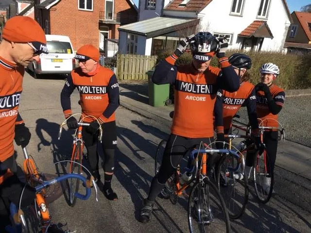
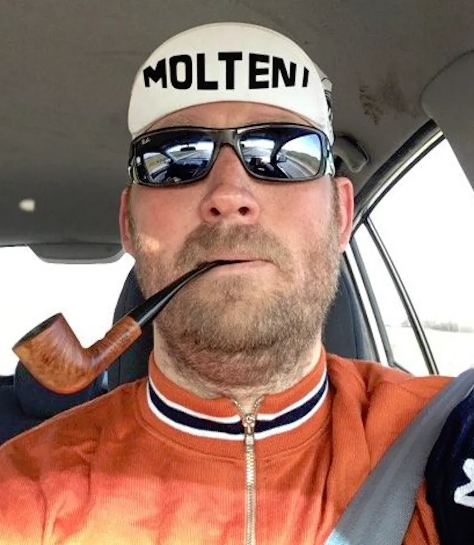
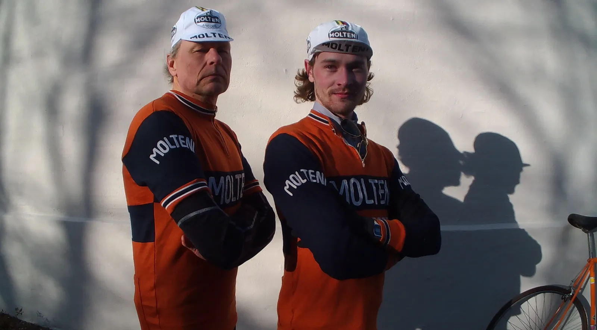

Træningssamling – Molteni & Peugeot

Squadra Molteni og Peugeot Re-Cycled afholdte i dag årets første træningssamling – og der var i den anledning bestilt lakridspiber, blå himmel, sol og forår.

Ti ryttere og to kvindelige hangarounds-ryttere var mødt frem. Der var kaldt til samling ved Squadra Moltenis HQ kl 13.00. Alle var mødt i god tid – på nær Morten Peugeot Mejsen. Han kom luskende et par minutter over, lugtende af billig pirat-Pernod.

Max Nielsen var som aftalt mødt, for at øse ud af sin erfaring, og for at lægge dagens træningsplan:
I kører som i plejer – og så I stikker i højre og venstre, lød det fra Max bag en tåge af Rød Orlik
Turen gik til Retro Fondo rudstrækningen. Ruten blev nærlæst, angrebssteder blev aflæst, bakkerne blev tæsket igennem og byskiltespurter blev udkæmpet.
Som altid var det Squadra Molteni, der løb af med sejren over Peugeot. I dag var den knusende. Som noget nyt havde Peugeot Re-Cycled kun to mindre defekter – men til gengæld var humøret helt i top.
Team K-Werk i tør-dampbad
Efter et par timers træning, blev kursen sat mod Squadra Moltenis HQ, hvor der ventede sandwich, mørke Molteni-øl og Torta-Mammas kage ventede. Men ved Skibet Kirke, let skjult på en afsidesliggende P-plads, stod 3 biler…
Egentlig hørte vi musikken først. En ensformig tysk 80’er tekno. Men så kunne vi skimte bilerne. Og inde i én af dem, bag let duggede ruder, så vi 4 ryttere fra Team K-Werk. Vi vendte om, og kørte ind på P-pladsen.
Inde i en Audi, sad næsten hele Team K-Werk; Jørgen, Jørgen, Jørgen, og Bagmanden. Varmeapparatet var skruet op på maksimum. Der havde de nok siddet i et par timer. Jeg fik ikke rigtig fat i, om de havde været ude at træne, men jeg er sikker på, at de var i gang med et tør-dampbad, fortæller Squadra Moltenis Holdkaptajn.
Men Team K-Werk så ud til at være i topform og klar til sæsonstart.
To nye stagiaires

Squadra Molteni havde også indkaldt holdets to nye stagiaires Carsten Jacobsen og Christian Hellesø Vaaben til dagens træningssamling.
De to stagiaires gjorde det rigtig godt under hele træningen. Dog havde Christian glemt at sætte sig ind, at der er fartbegrænsning på 50 km/t op af Jennumbakken. Evalueringen af de to stagiaires er yderst positiv.
De er helt klar to ryttere, som vi kan bruge i den kommende sæson. Carsten er snu som en ræv – og har stor erfaring. Christian er voldsom stærk på bakkerne – og så er han også hurtig i en spurt, siger holdlæge og -team-mentor Finn Birk.
Kaptajn Bjørnsteen havde sit nyindkøbte Monolta Zoom8 kamera med på træningsturen – og det blev der en lille film ud af.